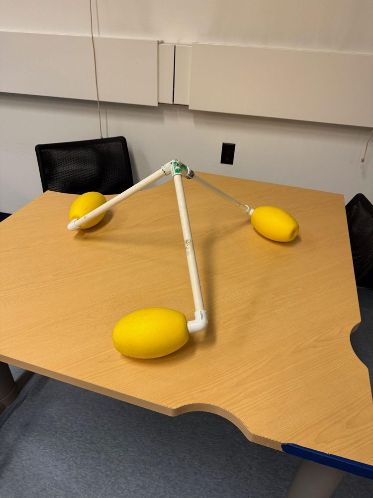
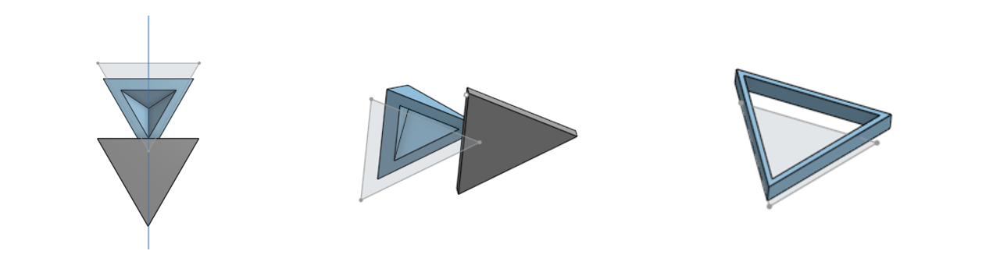
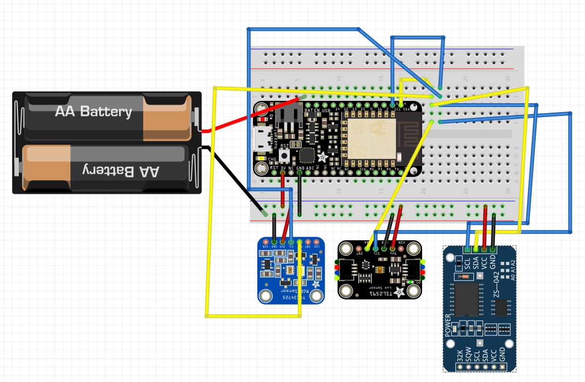

OCEAN 261 · Ocean Technology Design-Build Studio · Spring 2025
Bubble Sensor: a floating instrument built from scratch
Can the bubbles on the water's surface stand in for dissolved oxygen levels? Our team designed, built and deployed a low-cost floating sensor to find out.
The question
As more atmospheric gas enters the ocean, dissolved gas levels in local waters rise, which can harm aquatic life. Surface bubbles, from waves or passing boats, are one way gas gets into the water. If bubble coverage tracks dissolved oxygen (DO), a cheap sensor watching the surface could help monitor it.
Our hypothesis: more surface bubbles go with higher DO in surface water. To test it, we built an instrument to measure bubbles and compared its readings with DO data from a YSI EXO sonde (a professional water-quality sensor) placed next to it.
My contribution
This studio mixed students from three course levels. I was in OCEAN 261 and worked on the CAD design, modeling the instrument's physical parts in Onshape. Students in OCEAN 361 and 461 led the data analysis and wrote the final results.
The design problem was to fit a microcontroller, battery, breadboard and two sensors into a housing that sits at the center of a floating tripod, stays dry and holds the color sensor at a fixed height above the water. We chose a pyramid shape so the housing would follow the tripod's geometry and the parts would fit inside.
The build


- Frame: a tripod has the most stable shape for holding a sensor at a constant height above moving water. We built it from PVC with a buoy glued to each foot.
- Housing (my CAD work): a 3D-printed pyramid that matches the tripod's shape and holds all the electronics, with openings in the bottom for the sensor cables.
- Sensors: a color sensor (TCS34725) 10 cm above the water detects the white of the bubbles. A light sensor (TSL2591) 10 cm below the surface measures how much light gets through the bubbles. A real-time clock (ZS-042) timestamps every reading. Both sensors were sealed in epoxy to keep water out.

Process
Calibration
Color sensor: we photographed a tray of water covered with known amounts of bubbles (100%, 80%, 50% and 0%) from 5.5 cm above. We took each reading twice and matched it to a color temperature chart.
Light sensor: we ran two tests. In the first, the sensor sat in a dark box while we increased the brightness of a light 26 cm away, step by step. In the second, we kept the light at fixed brightness and moved it away from the sensor in 10 cm steps to see how distance affected the readings.
Problems we solved
- The two printed halves of the housing didn't fit together. We tried drilling, sanding, hot glue and epoxy before settling on a tight fit sealed with tape. This taught me to design for real printer tolerances, not just what fits on screen.
- The L-brackets that attached the housing to the frame didn't reach the PVC. We drilled new holes and screwed the brackets in place.
- The light sensor was supposed to hang from the housing, but we moved it to the PVC frame near the buoys so it stayed upright and at a steady depth.
Outcome
The data analysis and final findings were done by the upper-level students, so this page covers the build and the first deployment. The full unit floated and ran off the dock. The code started automatically when the battery was plugged in, and all three sensors worked together. But only the first two minutes of data were saved, and while the sensor was out on the water, we had no way to tell it had stopped recording.
What I took from it: the biggest failure wasn't a broken part. It was that the instrument gave its users no feedback. That's a usability problem, and it's part of why I moved into Human Centered Design.
Recommended changes
Add an LED that lights up while it's sampling, so anyone on the dock can see it's working.
Connect it to Wi-Fi (via WebREPL) so the team can watch the data live instead of finding out afterward.
Use an off-the-shelf waterproof enclosure instead of a custom 3D print, so anyone can build one without CAD skills.
The code, CAD files and parts list are in the team's public GitHub repository.